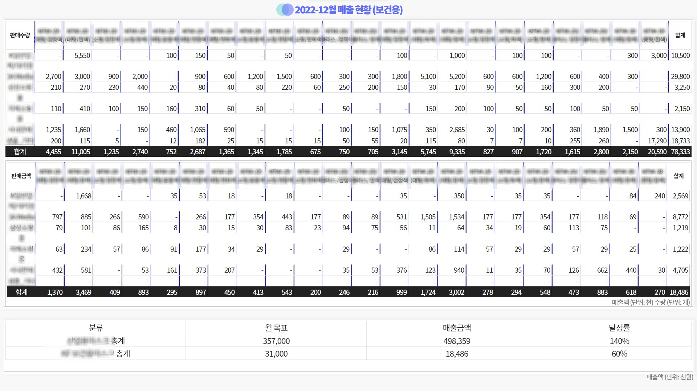
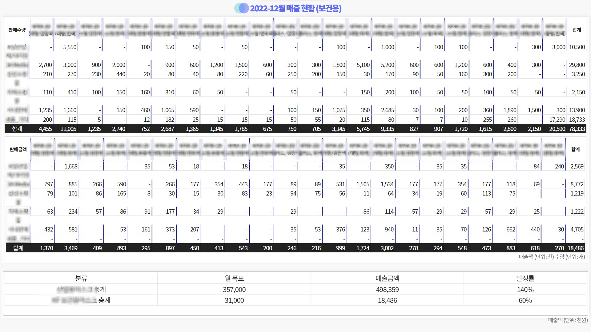
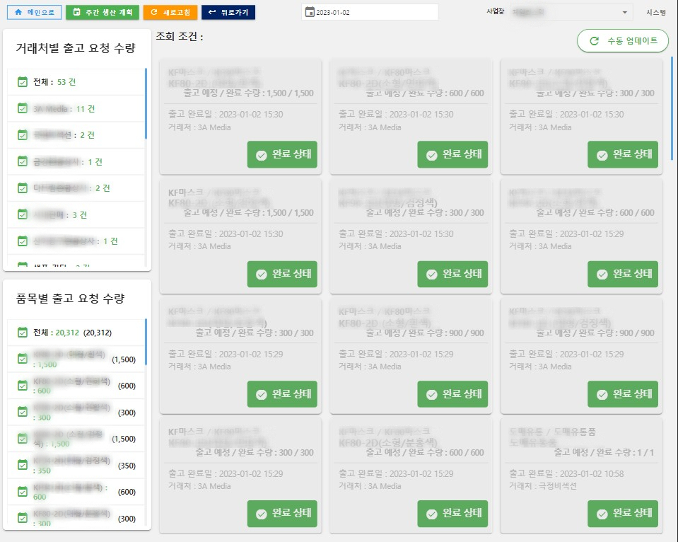
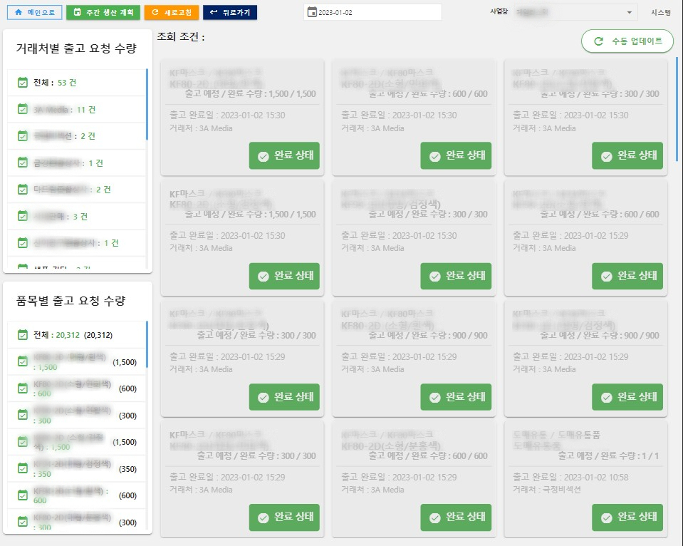
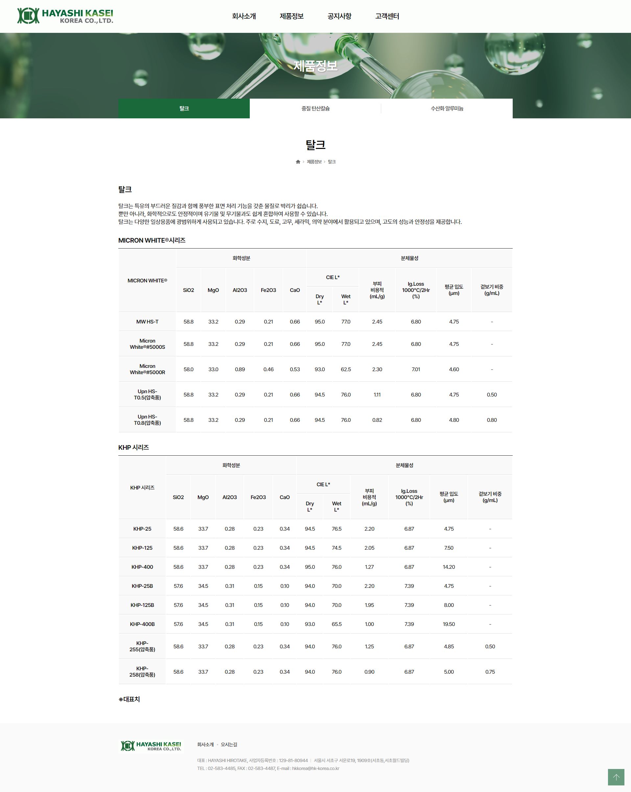
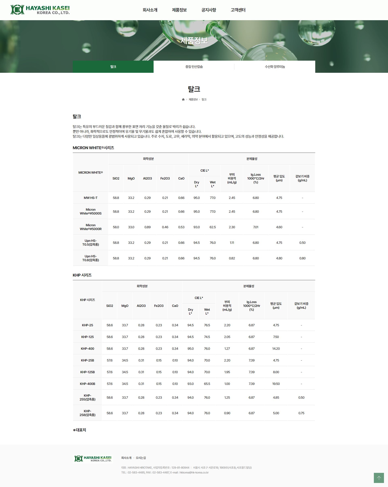

Park Soi
UI/UX PORTFOLIO
Please scroll vertically
to fully experience
the animations.
my Work
and my Job
안녕하세요!
제 등산 사진 어떤가요? 국기가 너무 멋지지 않나요? 국기를 게양할 수 있는 깃대가 세워진 봉우리를 '국기봉'이라고 합니다. 보통 등산로 입구에서 가장 가까운 봉우리이기도 합니다. 시간 날 때마다 틈틈히 국기봉을 찍고 돌아오고 있습니다. 거창한 취미는 아니지만 꾸준히 즐길 수 있고 스트레스 해소에도 정말 제격입니다. 업무모드가 'OFF' 상태일 때 제가 어떻게 보내고 있는지 소개하고자 합니다.
취미가 등산이 된 이유
처음부터 등산이 좋았던 것은 아니었습니다. 등산하려고 마음 먹는 것이 가장 힘들었습니다. 어찌저찌 참고 다녀보니 결국 '나' 자신을 더 힘들게 하는 것은 그 태도 때문이라는 것을 알게 되었습니다. 마음가짐에 대해 반성하고 돌아보는 시간을 많이 가지게 되었습니다. 40kg 정도를 감량하면서 등산을 정말 꾸준히 다녔습니다. 지금은 제가 살아가는 원동력이기도 합니다. 생각 정리도 잘 되고 다녀오면 마음이 편안해집니다.
일과 삶의 균형에 대해
저에게는 인생에 명확한 목표가 하나 있습니다. '하나를 알려줘도 똑부러지게 제대로 알려주는 사람이 되는 것입니다.' 그 목표는 업무적으로서 멋진 사수가 되는 부분도 포함되어 있습니다.
이 일을 지치지 않고 오래, 잘 해내고 싶습니다. 밸런스를 찾아 균형있게 이뤄나가고 싶습니다.
업무모드 'ON' 일 때: 효율성 있는 방식으로 업무 접근하기!
업무모드 'OFF' 일 때: 진짜 OFF!가 될 수 있도록 타협하기!
My Goals 퍼블리셔로서 임하는 자세
Comfort Zone
업무를 하면서 UI를 고려할 때는 익숙하다는 그 엄청난 가치를 중시합니다.
사용자에게 익숙한 UI/UX 제공은 가장 기본이자 최우선이라고 보고있습니다.
Trouble Shooter
"마이그레이션을 진행할 때 화면이 깨지거나 기술적 이슈로 갈등을 겪는 상황이 있으신가요? 어떻게 해결하시나요?"
퍼블리셔로서 매일 직면하는 부분입니다. 저는 그럴때마다 팀원의 의견을 듣고 놓치고 있는 것은 없는지 확인합니다.
디자인과 개발 그 단계에서 일어날 수 있는 갈등은 최대한 소통으로 풀어나가고자 합니다.


 



 



 
